基于网络的模拟系统，专注于科学和教育领域Web-Based Simulation for Science and Education
面向教学的模拟项目网站Simulation for Education (Sim4edu) 支持基于网络的模拟，使用开源技术进行科学和教育。它同时提供了 模拟技术和教学模拟库。其目标是支持各种类型的建模和仿真，包括 离散事件模拟, NetLogo 风格的网格空间模型(和元胞自动机模型),以及基于 代 理 的仿真。
与传统的模拟技术相反,基于网络的模拟通常使用JavaScript，可以在任何Web浏览器中执行，不仅可以在台式计算机上执行，还可以在平板电脑和智能手机等移动设备上执行。 这允许通过简单的网络链接共享模拟，并使任何人都可以轻松访问它们。
专案模拟程序实例
...不基于任何模拟范例及框架。
- 电梯传说Elevator Saga
- 学习编码，从编写一个电梯开始。
- JavaScript 蚂蚁JavaScript Ants
 模拟蚂蚁寻找食物并将其带回巢穴。 一旦蚂蚁找到食物，她就会在走回巢穴时留下一条化学痕迹。 随着时间的推移，化学物质会蒸发，而其他蚂蚁会遵循这些化学物质的变化梯度，直到找到食物。
模拟蚂蚁寻找食物并将其带回巢穴。 一旦蚂蚁找到食物，她就会在走回巢穴时留下一条化学痕迹。 随着时间的推移，化学物质会蒸发，而其他蚂蚁会遵循这些化学物质的变化梯度，直到找到食物。- 行车环岛Roundabout
- 交通车流微模拟
离散事件模拟实例(DES)
... with fixed-increment time progression.
- Susceptible-Infected-Recovered (SIR) Disease Model
- An epidemiological model about the infection dynamics of a contagious disease in a closed population. See also a continuous SIR model.
...使用下次事件时间序列
- 存货管理Inventory Management
- 一个库存管理系统,以再订货点为基础,可以实现连续补货决策。
- 得来速DriveThru
- 得来速餐厅的订单排队处理活动,在三个服务点进行：菜单板上的订单，厨房的订单准备和取货窗口的订单取件。
- 伦尼克基准线经济模拟Lengnick's Baseline Economy
-  家庭扮演着员工和消费者的角色，而企业则扮演雇主和生产者的角色。
网格空间模型实例
... 具有固定增量时间进展的。
- 八卦消息模型
Gossip Model - 一个关于传播八卦消息问题的元胞自动机模型。
- 谢林分离模型
Schelling Segregation Model  住宅区由属于某一群体的居民居住。 所有居民都会根据他们对不同群体的容忍程度，定期检查他们是否对他们的邻居满意。 如果他们不满意，则会移动到他们满意的位置，如果他们找不到这样的位置，则会离开该区域。
住宅区由属于某一群体的居民居住。 所有居民都会根据他们对不同群体的容忍程度，定期检查他们是否对他们的邻居满意。 如果他们不满意，则会移动到他们满意的位置，如果他们找不到这样的位置，则会离开该区域。
连续模拟实例
... 可以由固定增量时间进程驱动的连续状态变化。
- 太阳系系统
Solar System - 纯粹使用CSS（使用3D动画）实现。
- 银河系
Galaxy - 拥有5000颗恒星的螺旋星系（作者：Jonas Wagner，2010-08-18）。
- 世界3
World3 - 系统动力学 模拟人口，工业增长，粮食生产与地球生态系统限制之间相互作用的模拟模型。 由Insight Maker重建。 最初来源于 罗马俱乐部 （Club of Rome），请参阅 增长的极限 （The Limits to Growth）。